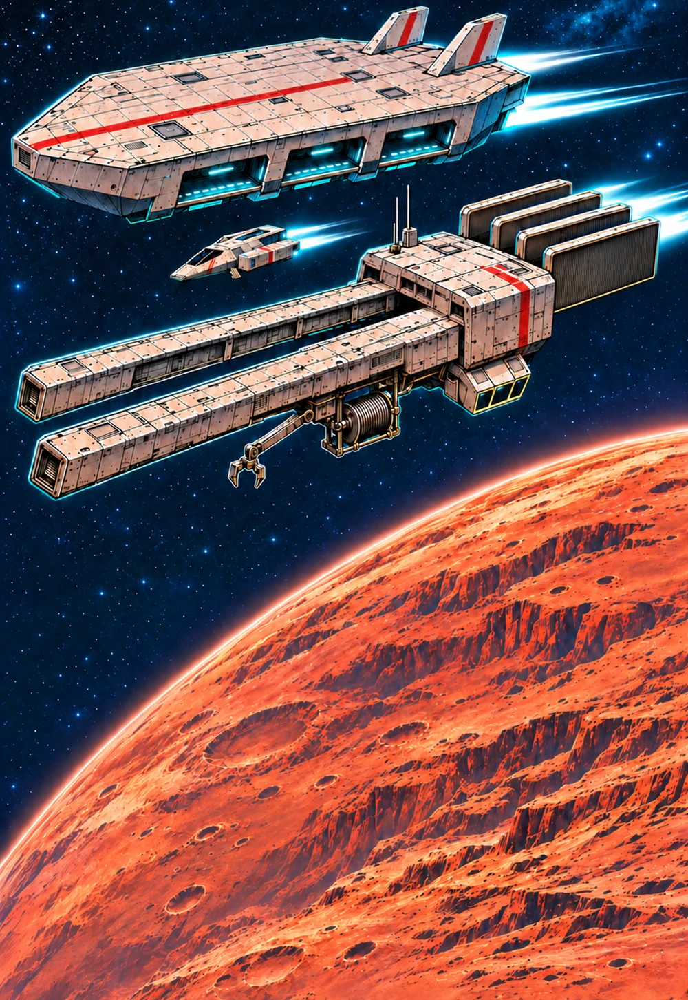
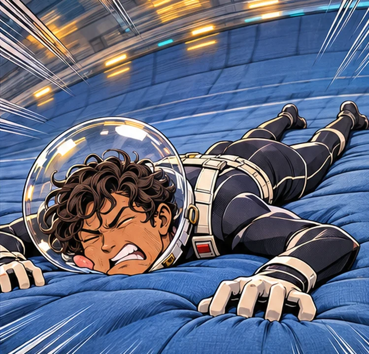

Floor Is the Enemy
They trained for Earth. The floor had other plans. Then an ordinary rescue wakes something very old.
Read the volume ↗
FLEET / THARSIS SECTORVICTORY WINDOW PRESENTS
Earth is heavy.
Your courage need not be.
PLAY FREE · 2–4 MIN / MISSION · NO SIGN-UP
The one Captain Beam broadcasts.
And the one the crew actually survived.
Pull the transmission apart.

WHAT REALLY HAPPENEDOne month. One very bad idea.
One more reason to bring everyone home.
They trained for Earth. The floor had other plans. Then an ordinary rescue wakes something very old.
Read the volume ↗2026-11-09T17:00:00+01:00
2026-11-16T17:00:00+01:00
NEW / MARS ACTION ARCADE
Fly the Moth. Hook the capsules. Bring everyone home.
MARS · CADET YEAR
Mostly on the floor.
Touch · keyboard · controllerHold ← / → or A / D to adjust. On touch, drag anywhere in the scene to adjust with one thumb, or hold the two large controls. For rhythms, tap the left or right half of the scene, or each direction control once in its marked window. A standard controller uses the left stick or D-pad to adjust, A for low and B for high. Menu pauses; A continues between sections.
Pause with P, Escape or the pause button. Changing tabs pauses automatically. Assistance widens the safe windows and steadies your weight. Every cue is visible without sound. A fall retries the current section; finished sections stay saved.
The game adapts the manga into an academy simulator. Extra exercise results and humorous captions are game material; original dialogue is marked with its volume and panel.
Every decoration has a story.
Some are harder to carry than the mission.
Your own achievements belong here, too.
THE HANDBOOK?
Two short. One long.
Something belongs in the gap.
Perhaps nothing.
A collection of what the crew has seen.
No answers from the future.
Six voices.
Several questionable decisions.
One rule: everyone comes back.
Original manga art.
A little more space for your screen.
STAY BRIGHT. STAY MARTIAN.